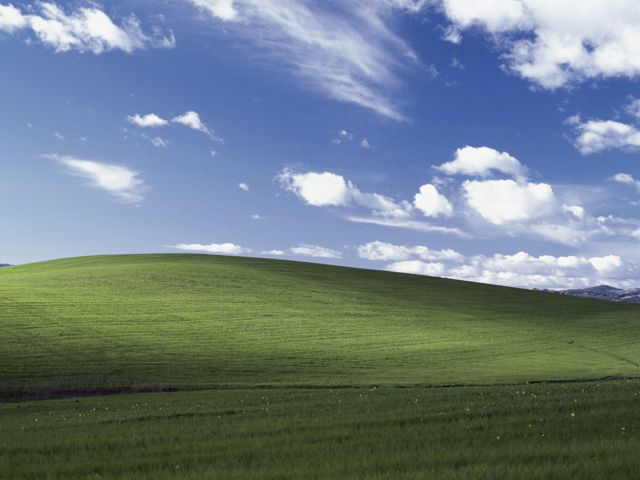

ImageViewer · 操作交互
可操作原型：单击选择，双击或 Enter 打开；方向键翻图，Esc 返回。Qt 实现以原生窗口验收为准。
窄窗口 640
查看空目录
切换深浅色
ImageViewer
交互原型
打开文件夹
打开示例图片
Ctrl+Shift+O
最近
示例图库
上次查看的图片
文件名
文件名
修改时间
文件大小
倒序
更多
切换深浅主题
快捷键
F1
位置
Ctrl+L
从一个文件夹开始
打开或拖入文件夹，浏览其中的图片。
打开示例图库
图库
适应窗口
适应窗口
Ctrl+0
原始大小
Ctrl+1
适应宽度
Ctrl+2
右转
更多
向左旋转
Ctrl+L
水平翻转
Ctrl+H
全屏预览
F11
快捷键
F1
